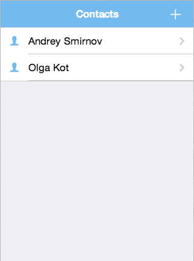
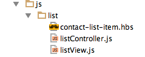
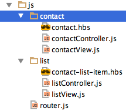
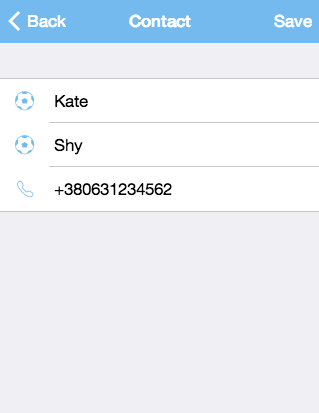
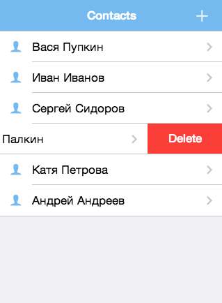
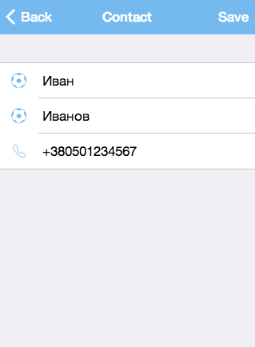
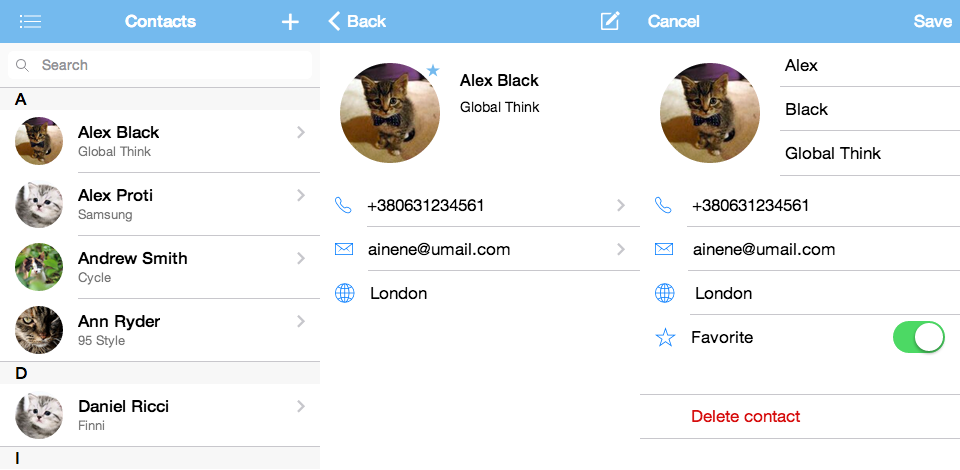

This app shows you example of using beautiful mobile framework - Framework7 in MVC way for building data-driven contacts application.
We will need additional javascript libraries:

Let’s create the following structure of project (index.html and app.js files leave empty yet).
To make your live easier you can download archive with the structure using this link: https://www.dropbox.com/s/c7q1jftn1538awe/Framework7-MVC-structure.zip (This archive is already filled with the first versions of the index.html and app.'s files)
Also link to Github sources - there is the latest version with incremental revisions history: https://github.com/philipshurpik/Framework7-MVC-base
Firstly create simply index.html file and connect all necessary libraries:
<!DOCTYPE html>
<html class="with-statusbar-overlay">
<head>
<meta charset="utf-8">
<meta name="viewport" content="width=device-width, initial-scale=1, maximum-scale=1, minimum-scale=1, user-scalable=no, minimal-ui">
<meta name="apple-mobile-web-app-capable" content="yes">
<meta name="apple-mobile-web-app-status-bar-style" content="black-translucent">
<title>F7 Contacts MVC</title>
<link rel="stylesheet" href="lib/css/framework7.css">
<link rel="stylesheet" href="lib/css/ionicons.css">
<link rel="stylesheet" href="css/app.css">
</head>
<body>
<div class="statusbar-overlay"></div>
<div class="views">
<div class="view view-main navbar-fixed">
<div class="navbar">
<div class="navbar-inner">
<div class="left"></div>
<div class="center" style="left:22px">Contacts</div>
<div class="right">
<a href="contact.html" class="link icon-only"> <i class="icon icon-plus">+</i>
</a>
</div>
</div>
</div>
<div class="pages">
<div data-page="list" class="page">
<div class="page-content">
<div class="list-block contacts-list">
<ul>
<a href="contact.html" class="item-link item-content">
<div class="item-media"> <i class="icon ion-ios7-person"></i>
</div>
<div class="item-inner">
<div class="item-title">Andrey Smirnov</div>
</div>
</a>
<a href="contact.html?id={{id}}" class="item-link item-content">
<div class="item-media">
<i class="icon ion-ios7-person"></i>
</div>
<div class="item-inner">
<div class="item-title">Olga Kot</div>
</div>
</a>
</ul>
</div>
</div>
</div>
</div>
</div>
</div>
<script type="text/javascript" src="lib/framework7.js"></script>
<script type="text/javascript" src="app.js"></script>
</body>
</html> Put the application initialization in app.js file:
var f7 = new Framework7({
modalTitle: 'F7-MVC-Base',
animateNavBackIcon: true
});
var mainView = f7.addView('.view-main', {
dynamicNavbar: true
});Run application in browser:

That's it. We have the first page and it is even something more than hello-world! :)
Useful tip:
In Chrome Devtools console, there is Emulation tab, where you can select target device or screen resolution and see how the application will look around on the screen of the device.
Now we need to dynamically load contacts (e.g. from localStorage) and display them in a list.
We have to modify our files:
1. index.html
Let’s connect RequireJs library, instead of the direct connection of app.js file
<script data-main="app" src="lib/require.js"></script>Data-main attribute indicates the entry point of the application (this is our file app.js).
You can also delete what is inside the tags <ul> - soon internal list will be generated from a template
2. app.js
Transform it in RequireJS module:
define('app', ['js/list/listController'], function(listController) {
var f7 = new Framework7({
modalTitle: 'F7-MVC-Base',
animateNavBackIcon: true
});
var mainView = f7.addView('.view-main', {
dynamicNavbar: true
});
listController.init();
return {
f7: f7,
mainView: mainView
};
});All the same, but wrapped in a require module. We also have added initialization of our first controller (soon it also will appear).
Now we need to create a controller for the main page, its view. Then connect and configure Handlebars and make handlebars template.
I propose to place the files as follows:

I like to group files in different directories by their functionality.
It seems for me much easier to organize files, especially in big projects.
Now create a simple controller for the list. And initialize our localStorage with some contacts in it.
File: js/list/listController.js
define(["js/list/listView"], function(ListView) {
function init() {
var contacts = loadContacts();
ListView.render({ model: contacts });
}
function loadContacts() {
var f7Base = localStorage.getItem("f7Base");
var contacts = f7Base ? JSON.parse(f7Base) : tempInitializeStorage();
return contacts;
}
function tempInitializeStorage() {
var contacts = [
{id: "1", firstName: "Alex", lastName: "Black", phone: "+380501234567" },
{id: "2", firstName: "Kate", lastName: "White", phone: "+380507654321" }
];
localStorage.setItem("f7Base", JSON.stringify(contacts));
return JSON.parse(localStorage.getItem("f7Base"));
}
return {
init: init
};
});Let’s configure our Handlebars and require plugins at the top of app.js file:
require.config({
paths: {
handlebars: "lib/handlebars",
text: "lib/text",
hbs: "lib/hbs"
},
shim: {
handlebars: {
exports: "Handlebars"
}
}
});Now we need to add a view that will be responsible for rendering our data (which we pass from controller) using the template.
File: js/list/listView.js
define(['hbs!js/list/contact-list-item'], function(template) {
var $ = Framework7.$;
function render(params) {
$('.contacts-list ul').html(template(params.model));
}
return {
render: render
};
});And our template:
File: js/list/listView.js
{{#.}}
<a href="contact.html?id={{id}}" class="item-link item-content">
<div class="item-media"><i class="icon ion-ios7-person"></i></div>
<div class="item-inner">
<div class="item-title">{{firstName}} {{lastName}}</div>
</div>
</a>
{{/.}}Let’s run it - and get - all the same, but much more modular and expandable.
Now we need to add the page to view and edit contact.
Each page is placed in a separate html file.
Page content is contained in div with "page" class:
<div class="page" data-page="list">"data-page" attribute determines unique page name, that is used for routing.
Navigation through the pages is performed in two ways:
<a href="about.html">Go to About page</a>app.mainView.loadPage('about.html');Navigation back (with animation) performed similarly:
<a href="index.html" class="back"> Go back to home page </a>app.mainView.goBack();Framework7 generates page events that you can subscribe:
PageBeforeInit, PageInit, PageBeforeAnimation, PageAfterAnimation, PageBeforeRemove
Complete information about pages and events is here:
http://www.idangero.us/framework7/docs/pages.html
http://www.idangero.us/framework7/docs/linking-pages.html
We should use an event that occurs after the insertion of a new page in the DOM - PageBeforeInit.
Create a simple router (file js/router.js) and subscribe for the event pageBeforeInit:
define(function() {
var $ = Framework7.$;
function init() {
$(document).on('pageBeforeInit', function (e) {
var page = e.detail.page;
load(page.name, page.query);
});
}
function load(controllerName, query) {
require(['js/' + controllerName + '/'+ controllerName + 'Controller'], function(controller) {
controller.init(query);
});
}
return {
init: init,
load: load
};
}); When event will be triggered, require function is used to load controller module and initialize it, passing in the request page query parameters.
Edit app.js module:
define('app', ['js/router'], function(Router) {
Router.init();
var f7 = new Framework7({
modalTitle: 'F7-MVC-Base',
animateNavBackIcon: true
});
var mainView = f7.addView('.view-main', {
dynamicNavbar: true
});
return {
f7: f7,
mainView: mainView,
router: router
};
}); At the first application load, after the main page insertion to the DOM, pageBeforeInit event handler will triggered.
It’s e.detail.page.name property will equals “list” (that name was given in the “data-page” property of index.html page). So appropriate controller will be launched.
Now we need to create contact add and edit page.
Add contact.html in the project root (if you downloaded archive with file structure, it should already be there).
Relevant links to contact.html already been added earlier in the homepage navbar and contact’s list template items.
<div class="navbar">
<div class="navbar-inner">
<div class="left sliding">
<a href="#" class="back link">
<i class="icon icon-back-white"></i>
<span>Back</span>
</a>
</div>
<div class="center contacts-header"></div>
<div class="right contact-save-link">
<a href="#" class="link">
<span>Save</span>
</a>
</div>
</div>
</div>
<div class="pages">
<div data-page="contact" class="page contact-page">
</div>
</div> Now when you click on a list item or button to add - the router tries to load the file js/contact/contactController.
Appropriately, we need to create it, it’s view and template page.

File: contactController.js
define(["app","js/contact/contactView"], function(app, ContactView) {
var state = {isNew: false};
var contact = null;
function init(query){
if (query && query.id) {
var contacts = JSON.parse(localStorage.getItem("f7Base"));
for (var i = 0; i < contacts.length; i++) {
if (contacts[i].id === query.id) {
contact = contacts[i];
state.isNew = false;
break;
}
}
}
else {
contact = { id: Math.floor((Math.random() * 100000) + 5).toString()};
state.isNew = true;
}
ContactView.render({
model: contact,
state: state
});
}
return {
init: init
};
});If the page is in edit mode (in the query contains the contact id value, then get it from localStorage.
If not, create a new one. So far, for simplicity, we do not use models, so our contact - it's just an object.
File: contactView.js
define(['hbs!js/contact/contact'], function(viewTemplate) {
var $ = Framework7.$;
function render(params) {
$('.contact-page').html(viewTemplate({ model: params.model }));
$('.contacts-header').text(params.state.isNew ? "New contact" : "Contact");
}
return {
render: render
}
}); And contact.hbs template:
<div class="page-content">
<form id="contactEdit" class="list-block">
<ul>
<input name="id" type="hidden" value="{{model.id}}">
<li>
<div class="item-content">
<div class="item-media"><i class="icon ion-ios7-football-outline"></i></div>
<div class="item-inner">
<div class="item-input">
<input name="firstName" type="text" placeholder="First name" value="{{model.firstName}}">
</div>
</div>
</div>
</li>
<li>
<div class="item-content">
<div class="item-media"><i class="icon ion-ios7-football-outline"></i></div>
<div class="item-inner">
<div class="item-input">
<input name="lastName" type="text" placeholder="Last name" value="{{model.lastName}}">
</div>
</div>
</div>
</li>
<li>
<div class="item-content">
<div class="item-media"><i class="icon ion-ios7-telephone-outline"></i></div>
<div class="item-inner">
<div class="item-input">
<input name="phone" type="tel" placeholder="Phone" value="{{model.phone}}">
</div>
</div>
</div>
</li>
</ul>
</form>
</div> Well. Now we can open our page to add or edit a contact:

Now we need to add the ability to save and delete contacts. Let’s do it.
First, add a handler for the save button.
Of course you can do it right directly in the controller like this:
$('.contact-save-link').on('click', function() {
// some code here
});But such way so is not good, and better to separate work with DOM and work with data and models.
So divide event handling and it processing.
Make an array of bindings in controller:
var bindings = [{
element: '.contact-save-link',
event: 'click',
handler: saveContact
}]; Pass this array as one of the properties of params object to the view.
And add a handler function in controller:
function saveContact() {
// some code here
} And in the view add event subscription - function bindEvents:
function bindEvents(bindings) {
for (var i in bindings) {
$(bindings[i].element).on(bindings[i].event, bindings[i].handler);
}
} Call it in the view render function:
bindEvents(params.bindings);Get the values, that user have entered into the form in saveContact function:
function saveContact() {
var contacts = JSON.parse(localStorage.getItem("f7Base"))
var newContact = app.f7.formToJSON('#contactEdit');
if (state.isNew) {
contacts.push(newContact)
}
else {
for (var i = 0; i < contacts.length; i++) {
if (contacts[i].id === newContact.id) {
contacts[i] = newContact;
break;
}
}
}
localStorage.setItem("f7Base", JSON.stringify(contacts));
app.router.load('list');
app.mainView.goBack();
} Save the data directly into localStorage.
The last two lines are responsible for go back to the previous page (list), and it’s listController reinitialization.
Now everything works!
But data operation in the controller is not good idea. Also, sometimes we need to add some special features - such as the validation data.
Create the model in the file js/contactModel.js.
Put in it set and validation functions.
define(['app'],function(app) {
function Contact(values) {
values = values || {};
this.id = values['id'] || Math.floor((Math.random() * 100000) + 5).toString();
this.firstName = values['firstName'] || '';
this.lastName = values['lastName'] || '';
this.phone = values['phone'] || '';
}
Contact.prototype.setValues = function(formInput) {
for(var field in formInput){
if (this[field] !== undefined) {
this[field] = formInput[field];
}
}
};
Contact.prototype.validate = function() {
var result = true;
if (!this.firstName && !this.lastName) {
result = false;
}
return result;
};
return Contact;
}); Note. Functions are added not to the object itself, but in its prototype.
Accordingly, when converting the object in JSON, only its properties (without functions) are serialized.
Now add the model in to contactController:
Add it to the list of dependencies:
define(["app","js/contact/contactView", "js/contactModel"], function(app, ContactView, Contact)Change creation and assignment of contact:
contact = new Contact(contacts[i]);and
contact = new Contact();And modify save function, adding contact model validation:
function saveContact() {
var formInput = app.f7.formToJSON('#contactEdit');
contact.setValues(formInput);
if (!contact.validate()) {
app.f7.alert("First name and last name are empty");
return;
}
var contacts = JSON.parse(localStorage.getItem("f7Base"));
if (state.isNew) {
contacts.push(contact);
}
else {
for (var i = 0; i < contacts.length; i++) {
if (contacts[i].id === contact.id) {
contacts[i] = contact;
break;
}
}
}
localStorage.setItem("f7Base", JSON.stringify(contacts));
app.mainView.goBack();
app.router.load('list');
}Well. Save is ready!
Now add the removal from the list of contacts.
Implement it with a gesture Swipe To Delete.
Modify the list element template markup:
{{#.}}
<li id="{{id}}" class="swipeout">
<a href="contact.html?id={{id}}" class="item-link item-content swipeout-content">
<div class="item-media"><i class="icon ion-ios7-person"></i></div>
<div class="item-inner">
<div class="item-title">{{firstName}} {{lastName}}</div>
</div>
</a>
<div class="swipeout-actions">
<div class="swipeout-actions-inner">
<a href="#" class="swipeout-delete">Delete</a>
</div>
</div>
</li>
{{/.}} Add event subscription to the listController:
var bindings = [{
element: '.swipeout',
event: 'deleted',
handler: itemDeleted
}]; And then we'll do by analogy with the subscription in contacts - pass it to the view and call subscribe function bindEvents (bindings)
Add event handler for item removal:
function itemDeleted(e) {
var id = e.srcElement.id;
var contacts = JSON.parse(localStorage.getItem("f7Base"));
for (var i = 0; i < contacts.length; i++) {
if (contacts[i].id === id) {
contacts.splice(i, 1);
}
}
localStorage.setItem("f7Base", JSON.stringify(contacts));
}And look at the result:

We create very simple MVC mobile application using Framework7.
Framework7 in conjunction with Phonegap let’s you create beautiful native-like applications for IOS. And it may be useful for developers who are new to ObjectiveC.
Thus we immediately obtain a cross-platform application that works on Android.
Project sources with a history of edits available here: https://github.com/philipshurpik/Framework7-MVC-base
And I made an extended case study contacts application, that has more features and uses more functions of Framework7. There are swiping left menu bar, popup, search bar, etc. It’s sources there: https://github.com/philipshurpik/Framework7-Contacts7-MVC
And screenshots (with cats) :)
